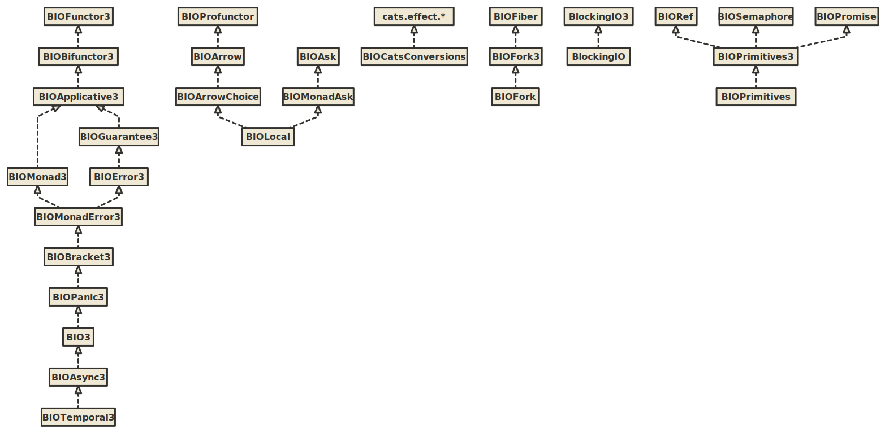
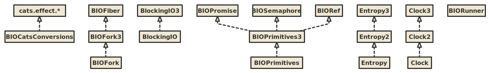
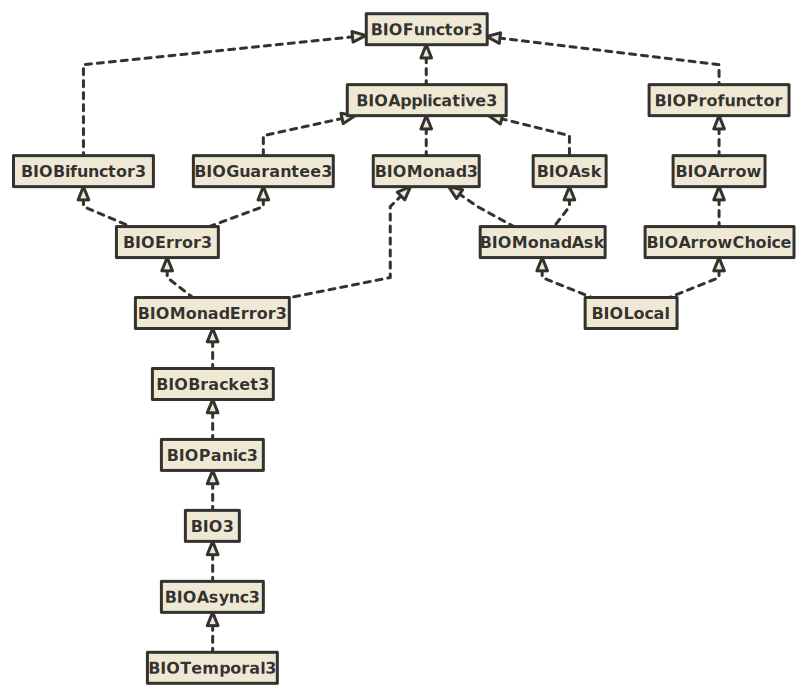

BIO
BIO is a set of typeclasses and algebras for programming in tagless final style using bifunctor or trifunctor effect types with variance.
Key syntactic features:
- Ergonomic
Fsummoner that is a single point of entry to all methods in the hierarchy - Import-less syntax. Syntax is available automatically available whenever any typeclass from the hierarchy is imported, e.g. immediately after IDE auto-import.
These syntactic features allow you to write in a low ceremony, IDE-friendly and newcomer-friendly style:
import izumi.functional.bio.{F, BIOMonad, BIOMonadAsk, BIOPrimitives, BIORef3}
def adder[F[+_, +_]: BIOMonad: BIOPrimitives](i: Int): F[Nothing, Int] =
F.mkRef(0)
.flatMap(ref => ref.update(_ + i) *> ref.get)
// update ref from the environment and return result
def adderEnv[F[-_, +_, +_]: BIOMonadAsk](i: Int): F[BIORef3[F, Int], Nothing, Int] =
F.access {
ref =>
for {
_ <- ref.update(_ + i)
res <- ref.get
} yield res
}
Key semantic features:
- Typed error handling with bifunctor effect types
- Automatic conversions to equivalent
cats.effectinstances inimport izumi.functional.bio.catz._ - Automatic adaptation of trifunctor typeclasses to bifunctor typeclasses when required
- No ambiguous implicit errors. It’s legal to have both
BIOMonad3andBIOMonadAskas constraints, despite the fact thatBIOMonadAskprovides aBIOMonad3:def adderEnv[F[-_, +_, +_]: BIOMonad3: BIOMonadAsk] // would still work - Wrappers for primitive concurrent data structures:
BIORef,BIOPromise,BIOSemaphore
To use it, add fundamentals-bio library:
libraryDependencies += "io.7mind.izumi" %% "fundamentals-bio" % "0.10.3-M2"
Overview
The following graphic shows the current BIO inheritance hierarchy. Note that all the trifunctor BIO*3 typeclasses have bifunctor BIO* counterparts.

{kind=link}
Auxiliary algebras:

{kind=link}
Relationship hierarchy:

{kind=link}
0.10.3-M2